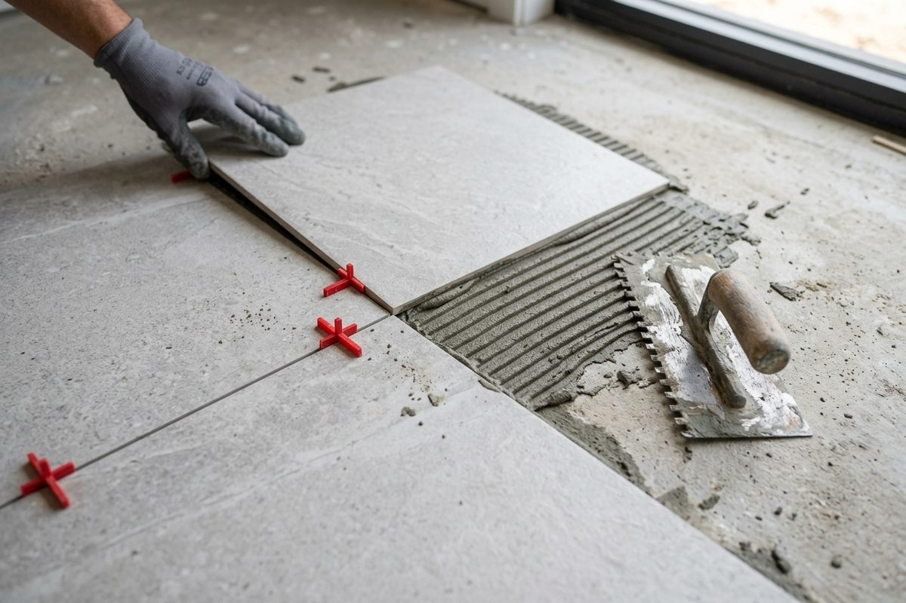
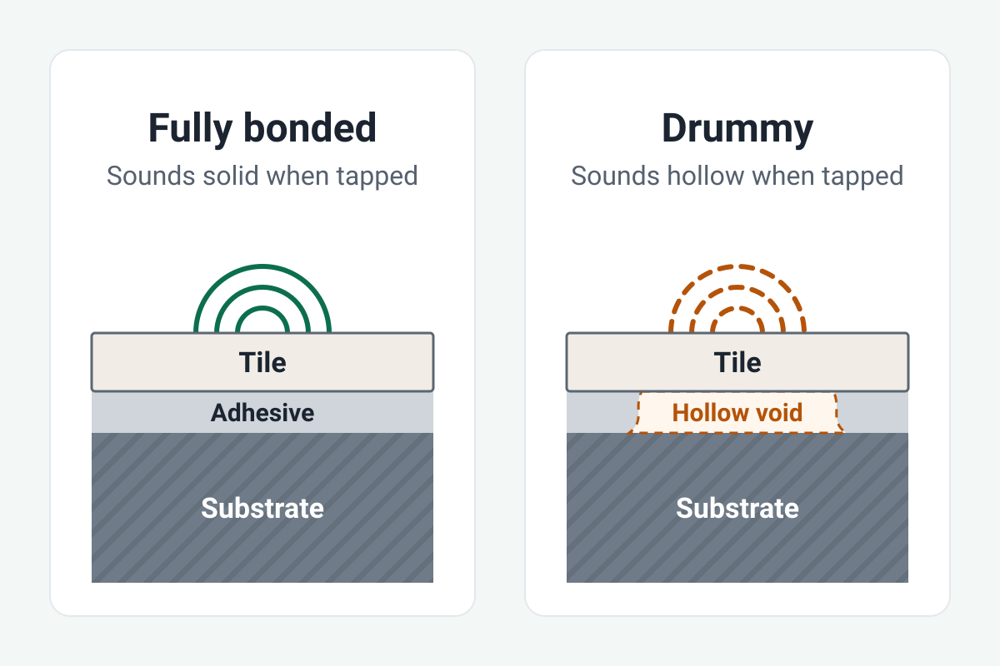

Floor Tiling in Perth: Laying, Replacing and Repairing Tiles

Most of what determines whether a tiled floor lasts happens before the first tile goes down. The substrate underneath it, how flat and sound and dry it is, decides more than the tile you choose or the price you pay.
This page covers laying a new floor, replacing an old one, tiling walls outside wet areas, and what to do about tiles that have cracked, lifted or gone drummy. Tell us about the job and we will pass it to a Perth tiler who can quote it.
Get your floor tiling job quoted
What a floor tiling job involves
- Removal, if there is an existing floor. Tiles, adhesive and whatever bed they were laid on. This is dirty, heavy work and it produces a surprising volume of waste.
- Assessing the substrate. What is actually under there, and what it needs before it can be tiled.
- Preparation. Grinding back old adhesive, patching, and levelling where the floor is out.
- Setting out. Deciding where the full tiles land and where the cuts fall.
- Laying. Adhesive, tiles, spacers, and the cuts around door frames, cabinetry and fixtures.
- Grout and sealant. Grout in the joints, flexible sealant where the floor meets walls and other materials.
Tile installation is covered by AS 3958:2023, incorporating Amendment No. 1 (2024). It is the standard a tiler is working to whether or not it is mentioned in the quote.
AS 3958:2023 Installation of ceramic and stone tiles, reissued incorporating Amendment No. 1 (June 2024), Standards Australia.
The substrate is where the money hides
Two floors that look identical can cost very different amounts to tile, and the difference is almost always underneath.
A flat, sound, dry substrate is cheap to tile. One that needs grinding, patching or self-levelling compound is not. A floor that moves, or that is still holding moisture, is a problem to solve before tiling rather than a cost to absorb during it.
The catch is that nobody can see it until the old floor comes up. A tiler quoting your job is estimating what they expect to find. This is why quotes for retiling carry variation clauses, and why a quote with no variation clause is not more generous, it is just less honest about the same risk.
If you are replacing an existing floor, ask what happens if the substrate is worse than expected, and how that gets approved before the extra work starts.
Removing old tiles or tiling over them
New tiles can sometimes go over an old tiled floor, but only when every existing tile is still fully bonded, the floor is flat, and the extra height works at doors and thresholds. If any of those is not true, the old tiles have to come up first.
Why a tile-over is a gamble. The new floor is only as sound as the old one under it. A drummy or cracked tile underneath carries its problem straight through to the new surface, and the evidence ends up buried. Tapping across the whole floor before anyone decides is the minimum.
Height. Tiling over adds the thickness of a new tile and its adhesive bed. That height has to be absorbed somewhere: at door bottoms, at the step into the next room, under the dishwasher space, and where the tiles meet carpet or timber.
Wet areas are different. Tiling over a bathroom floor or a shower does nothing for the waterproofing underneath, and if that has failed, a new layer of tiles hides the problem rather than fixing it. That is covered on the bathroom tiling page.
Taking it up. Removal means breaking out the tiles, grinding back the old adhesive or bed, and carting away a heavy load of waste. It is also the moment the substrate finally becomes visible, which is why a quote that includes removal usually carries a variation clause. What removal and disposal add to the price is on the cost guide.
Older Perth homes. In homes built before 1990, old vinyl floor tiles and linoleum backing can contain asbestos, as set out under Older Perth floors below. Breaking up the old floor is exactly the step that would disturb it, so if there is any doubt, it gets tested before removal starts.
Not sure whether yours can be tiled over? Tell us about the floor and we will pass it to a Perth tiler who can look at it before quoting.
Porcelain, ceramic or natural stone
For most floors, porcelain is the safe default, because it absorbs the least water and wears the best. Ceramic suits walls and light traffic, and natural stone suits anyone happy to seal it and keep resealing it.
Porcelain. Dense and hard wearing, which is why it is the usual choice for living areas, hallways and entries. It is also harder to cut and drill, and that shows up in the labour on a detailed room.
Glazed ceramic. A softer, more absorbent body under a glaze. It is easier to cut, often cheaper, and sold widely as wall tile. Many ceramic wall tiles are not made for foot traffic at all, so check the manufacturer lists a tile as suitable for floors before it goes on one.
Natural stone. Marble, limestone, travertine, slate and granite all behave differently, but most are porous and need sealing, then resealing from time to time. Marble and limestone can also be marked by acidic household cleaners. Stone is usually heavier and less uniform than porcelain, which adds time to the laying.
Whatever you choose, have every quote priced on the same tile. Porcelain is slower to cut than ceramic and stone is slower again, so three quotes on three materials will not compare.
Tile format, layout and setting out
Format. Large format tiles need a flatter substrate than small ones, because any dip in the floor shows up as lippage at the edges. Getting a floor flat enough for a 600 by 600 or larger tile is often the real work in the job.
Layout. A straight lay is the baseline. Diagonal, herringbone and brick bond patterns take longer, produce more cuts and more wastage, and demand a more accurate set out. The pattern is a labour decision as much as an aesthetic one.
Setting out. Where the first full tile goes decides where the cut tiles end up. Done well, the cuts fall where nobody looks. Done badly, you get a sliver of tile along the most visible wall in the room. It is worth asking how the floor will be set out before it starts.
Wastage. Order more tile than the measured area. Cuts, breakages and pattern lays all consume more than you would expect, and matching a tile from a different production batch later is unreliable because the colour can shift between batches.
Grout colour and joint width
Two decisions made in about a minute at the tile shop, which you then live with for years.
Joint width has to suit the tile. A tile with a precisely cut edge allows a narrow joint. A tile with a rounded or uneven edge needs a wider one to absorb the variation between tiles, and forcing a narrow joint onto it makes every small difference in size visible. Grout is made for particular joint widths, so the grout and the joint are chosen together.
Movement is a separate question. A grout joint is not a movement joint. A tiled floor needs flexible movement joints at its edges, and a large floor needs them across the room as well. Without them the movement has to go somewhere, and it turns up years later as tiles lifting along a wall or rising in the middle of the floor. Ask where they are going.
Colour is a maintenance decision. A wide contrasting joint makes the grid part of the design, and it also draws the eye to every variation in tile size and every imperfect cut. A tight matching joint reads as one surface. Light cement based grout on a floor shows traffic and staining soonest, because cement grout is porous. Mid tones are more forgiving than either extreme.
Cement grout benefits from sealing and epoxy grout does not. The difference, and what regrouting involves, is covered on the bathroom tiling page.
Wall tiling
Outside wet areas, wall tiling is the same trade and much of the same thinking. The substrate has to be sound and flat, the set out decides where the cuts land, and the detail work around windows, edges and power points is where the time goes.
Wall tiling in a bathroom, shower or other wet area is a different job, because it sits on top of a waterproofing membrane and carries requirements that dry wall tiling does not. That is covered on the bathroom floor and wall tiling page.
Splashbacks
Kitchen and laundry splashbacks are the same trade and a much smaller job. They are usually priced hourly rather than by the square metre, and the labour is in the setting out and the cuts around power points rather than the area.
Feature walls
A feature wall is a different job from ordinary wall tiling, and it is worth calling it that when you ask for a quote. It is usually small, high in detail, and priced on the difficulty of the tile rather than the area.
Ordinary wall tiling covers an area. A feature wall is a single visible surface the room is arranged around: a fireplace surround, the wall behind a bed or a bath, an entry wall. The tile chosen for it is often the hardest one to lay, such as a finger mosaic, a stacked or herringbone subway tile, split face stone, or a large slab where the join has to be placed deliberately.
That means the price per square metre on a feature wall is not the rate for the rest of the room. Setting out matters more, because every joint is at eye level and there is nothing to hide a bad cut behind, and external corners need a mitre or a trim. The same wall inside a shower is a bathroom tiling job, because it sits on a waterproofing membrane.
Cracked, loose and drummy tiles
A tiled floor usually tells you it has a problem before it fails completely.
Cracked tiles. A single cracked tile is often impact damage and nothing more. Cracks that run in a line across several tiles, or that keep reappearing after a repair, usually mean something is moving underneath. Replacing the tile without addressing that will produce the same crack again.
Loose or lifting tiles. Tiles that rock, or that have lifted at an edge or a corner, have lost their bond with the substrate.
Drummy tiles. Tap a tiled floor and a well bonded tile sounds solid. One that sounds hollow is drummy, which means the adhesive is no longer holding it to the floor across some or all of its area. A drummy tile is not necessarily loose yet, but it is on its way. Tapping across a floor is how a tiler finds out how far the problem extends, and it is worth doing before anyone quotes a repair, because the visible damage is often smaller than the actual area.
When repair beats replacement. If the drummy area is contained and the rest of the floor is sound, replacing the affected tiles is reasonable. If the problem is spread across the floor, or if it keeps coming back, patching it is throwing money at a symptom.
The tile matching problem. Replacing individual tiles depends on having matching tiles. If you kept spares from the original job, say so when you enquire, because it changes the job significantly. If you did not, an exact match is often impossible, and the practical options are taking tiles from an inconspicuous area to patch the visible one, or accepting a deliberate contrast.

What goes wrong
Four failures turn up again and again, and all four are decided before the first tile is laid.
Lipping. Large format tile laid on a floor that was not levelled for it. It is visible along every joint, permanent, and a trip hazard where it is worst.
No movement joints. The failure arrives years later as tiles debonding along a wall or lifting in the middle of the floor, and relaying without addressing it repeats it.
Setting out from the wrong point. A sliver of cut tile along the most visible line in the room. It costs nothing to get right at the start and cannot be fixed afterwards.
Transitions left to the end. Where tile meets timber, carpet or the next room there is a height difference and an exposed edge. How that is finished, with a trim, a threshold strip or a flush detail built into the levelling, belongs in the quote, not on the last day.
Older Perth floors
In homes built before 1990, old vinyl floor tiles, linoleum backing and the sheeting behind wall tiles can contain asbestos. WorkSafe WA treats removing any quantity of friable asbestos, or more than 10 square metres of non-friable asbestos, as licensed asbestos removal work, and WorkSafe has to be notified at least five days before that work starts.
HealthyWA, Asbestos in and around the home; WorkSafe WA, Asbestos removal notifications.
This matters more on floors than most people realise, because removing an old floor means cutting, grinding and breaking up exactly the materials most likely to contain it. If there is any doubt, it gets tested before anything is disturbed.
Before you get a quote
Useful to know, and useful to tell whoever is quoting:
- The room and roughly how many square metres
- Whether it is a new floor, a replacement, or a repair
- What is on the floor now, and what is underneath it if you know
- Whether you have chosen tiles, and the format and material if so
- Whether you have spares, for a repair
- Anything you have noticed: movement, moisture, hollow sounding areas, cracks that keep returning
Give every tiler the same brief, because two quotes for different scopes cannot be compared. What tiling costs in Perth, and why published figures for the same job disagree so widely, is covered on our tiling cost per m2 page.
Common questions
Can new tiles be laid over old floor tiles?
Sometimes. Every existing tile has to be fully bonded and the floor flat, and the extra height has to work at doors and thresholds. A drummy tile under the new floor carries its problem straight through, so the old floor needs tapping across before anyone decides.
How long does it take to tile a floor?
It depends far more on what happens before the tiles go down than on the laying. Taking up an old floor, grinding back adhesive and levelling the substrate can take longer than the tiling, and the grout cannot go in until the adhesive has set. Ask how long the room will be out of use, from removal to the first time you can walk on it.
Can a tiler replace just a few cracked tiles?
Yes, if the problem is contained and there is a tile to match. A single cracked tile is often impact damage, but cracks that run across several tiles or keep coming back usually mean something is moving underneath. If you kept spares from the original job, say so when you enquire.
What is the difference between porcelain and ceramic tiles?
Water absorption. Porcelain is the denser of the two, which makes it harder wearing and better suited to floors, wet areas and outdoor use. Ceramic has a softer, more absorbent body under a glaze, is easier to cut, and is often sold as wall tile.
Can floor tiles go on walls, and wall tiles on floors?
Floor tiles usually can go on walls, because a floor rated tile is tougher than a wall needs, but large or heavy tiles need an adhesive and a wall that can hold them. Wall tiles often cannot go on floors, because many glazed ceramic wall tiles are not made for foot traffic. Check the manufacturer rates the tile for floors before you buy.
Can you tile onto a timber floor?
Usually, but the floor has to be stiff enough that the tiled surface is not being asked to absorb the flex. How the floor is framed, what is over it and whether it needs extra sheeting are the questions, and they are worth settling before the tile is ordered.
Does the floor need levelling before tiling?
It depends how flat the floor is and how flat the tile needs it to be. Large format tile is far less forgiving than small tile, so the same floor can need levelling for one tile and not for another. Nobody knows how much until the old covering is off, so ask whether the quote includes it or provides for it.
What size tile should I use?
Larger tiles read calmer and have less grout to clean, but they need a flatter floor and cost more to lay. Smaller tiles are more forgiving of an uneven floor and give you more joint to maintain. The deciding factor is usually how flat the floor is to start with.
Does grout colour really matter?
For maintenance, yes. Cement based grout is porous, so light grout on a floor shows traffic and staining soonest. Contrasting grout also draws the eye to every variation in tile size and cut. Mid tones are the forgiving choice, and epoxy holds its colour better than cement based grout without sealing.
Get your floor tiling job quoted
Tell us the room, roughly the area and what you want done. We will pass it to a Perth tiler who can quote it. We do not do the tiling ourselves, and the tiler who quotes you sets their own price.
No spam and no obligation. Your details go to a local tiler so they can quote your job - the contractor pays for the enquiry, you do not. We never sell your details or add you to a marketing list. How we handle your information.
Ready to get started?
Call (08) 9516 1688 or send an enquiry online.
Get your floor tiling job quotedCall (08) 9516 1688